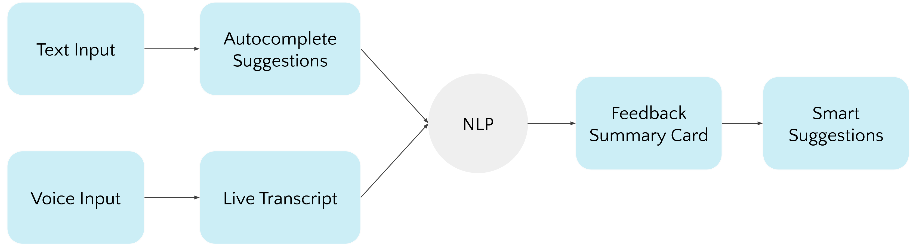

Overview
Smart Feedback is a a redesign of Figma's comment system that provides context-relevant system reminders and a visual suggestion functionality, enabling Figma users to provide more constructive, actionable feedback.
This was done as a 5-week team project under the instruction of Professor Haijun Xia for Design 118 at UC San Diego.
Team
Yada Chuengsatiansup
Han Bao
Angela Wang
My Roles
Strategy
UI Design
Prototyping
Tools
Figma
01
Context
Figma's Comment System is not Conducive to Productive Visual Design
In professional design settings, style guides provide a concrete framework
for visual design language. However with collaborative situations where
design style is variable such as school projects or client branding,
visual details are constantly in flux and negotiated via feedback.
Feedback and clear communication is pivotal for collaborative work.
However Figma’s comment system is generic, overly verbal, and does not
reflect the visual nature of the work. Consequently, left to their
own devices, users can provide unclear or ambiguous verbal feedback which bogs
down the design process if misinterpreted.
Problem statement
To streamline collaborative iteration, Figma users need a design-relevant feedback system which provides support for providing actionable and precise feedback.
02
Ideation
Competitor inspiration: Using AI to Reduce Cognitive Load and Spark Ideas
During competitor research, we examined popular tools that each had a feedback functionality: Grammarly and Google Docs. In both applications, we observed that AI was used to provide customized suggestions. We were inspired by how it could reduce cognitive load by providing users individualized suggestions. Rather than a blank slate, users receive additional support from system cues which can also incidentally spark new ideas.
We also appreciated how Google Docs' suggestion functionality where feedback authors could make edits to the work, enabling recipients to get a concrete visualization of changes.
We adapted these features to our design:
Design Process
Before jumping into the interface design, we mapped out the high-level interactive flow of our system:
The system functionality is predicated on natural language processing to generate suggestions.
Users can provide feedback in written text or voiced input. However, in either flow, the recipient receives the same format of feedback: a summary card which distills feedback from either input flow and a "Smart Suggestions" modal which contains options for users to hover over to preview changes.
Design rationale
Text + Voiced input: Additional flexibility to support diversity of workflows
Summary card: Standardized format streamlines feedback points for more clarity
Smart Suggestions modal: Visual previews can be directly implemented or ignored, streamlining iteration
03
Lofi Prototypes
Mapping out the flows onto interface skeletons
We applied our ideas to lo-fi prototypes to make sure our interactive flow would make sense when mapped out on an actual interface:
At this stage, we had to determine what the summary card would specifically contain.
We determined the summary card would distill input into four areas we felt would
produce specific, relevant, and actionable feedback in Figma:
- Critical level: What priority is this feedback? (e.g. Low)
- Area: Where? (e.g. Background)
- Feedback: What? (e.g. Too dark)
- Action: Do what next? (e.g. Lighten background)
04
Redefining
Evaluating User Needs of Collaborative Figma Users
We had to consider the real-world constraints of working in a large collaborative design project: multiple people working on a single project, providing and receiving feedback concurrently with disparate milestones and corresponding deadlines.
To make the summary card more specific and thus more effective, we added deadline dates and assignee parameters.
05
Final design
Adding color and interactions
We fleshed out our prototypes, taking cues from the visual style of Figma's comment system:
Voiced input
Text input Autocomplete suggestions
Assigning feedback to a user
Summary card + Suggestions overlay
Takeaways
05
Summary
Smart Feedback is Smart Design
Smart Feedback streamlines feedback/iteration process by leveraging AI + NLP to provide individualized verbal and visual suggestions. This design and context-conscious system enables clearer, more actionable feedback and may stimulate the generation of additional design ideas. When the system provides more support to the feedback author to provide better feedback, it benefits all parties, bolstering productivity and innovation.
06
Takeaways
Real-World Insights + Acknowledgements
While user research + testing was outside the scope of this project, it would greatly benefit
from getting real-world insight from a variety of Figma use cases to determine real user needs.
What do users determine as bad vs good feedback? Are the system suggestions actually helpful or distracting?
Overall, by doing this project I didn't just garner new design experience,
but I also learned a great deal about how to communicate, motivate, and pivot design decisions
thanks to the presentation milestones and feedback thereof.
I'd like to thank Professor Haijun Xia for his
constructive feedback and insightful curriculum as well as my teammates Yada, Han, and Angela for their collaboration and
great work.